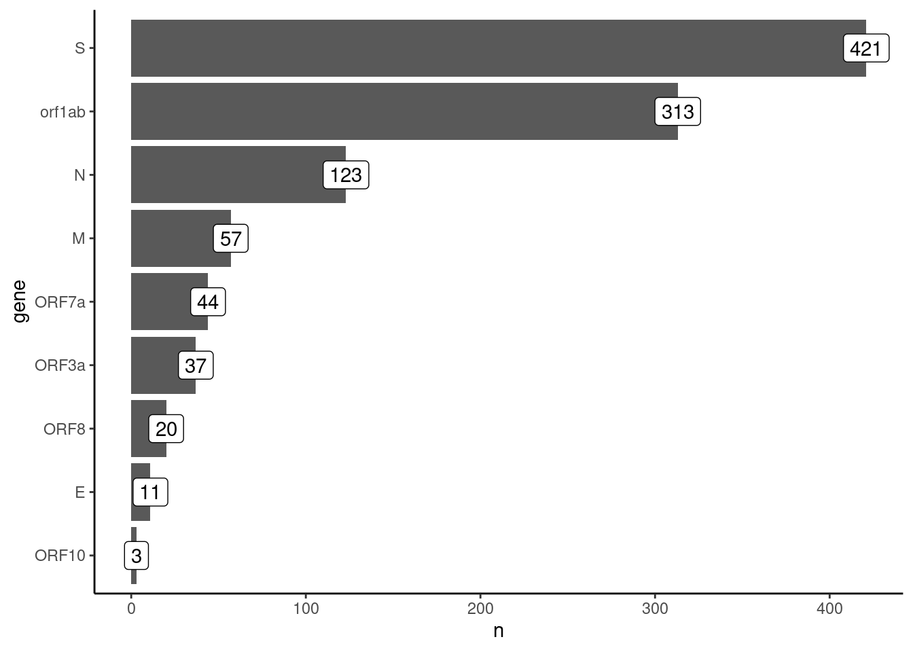

library(tidyverse)
library(janitor)
theme_set(theme_classic())14 Mutation Analysis
Learning Objectives
- Perform exploratory analysis of mutations detected in wastewater samples.
- Identify the most common types of mutations identified and their occurrence in different genes.
- Produce a heatmap-style visualisation of mutation abundances over time.
- Analyse individual mutations and estimate frequency confidence intervals from read counts.
14.1 Data import
In the previous chapter we investigated the variant/lineage abundances estimated by Freyja. A complementary analysis is to look at how the frequency of individual mutations changes over time. This analysis is agnostic to which lineages those mutations occur in, and may even reveal new emerging mutations not yet characterised in the known Pango lineages.
For this analysis, we can use the mutation table generated by viralrecon, which is saved in its output directory under variants/ivar/variants_long_table.csv. (Note: “variants” here is used to mean “mutations”; see the information box in Section 6.1 where this terminology is clarified. To avoid confusion we use the term “mutation” in this chapter).
We will do our analysis in R, so we start by loading the packages being used:
We then import the data into R. In this case we also “clean” the column names of this table, to simplify them.
mutations <- read_csv("preprocessed/viralrecon/variants/ivar/variants_long_table.csv")
mutations <- clean_names(mutations)This is what the table looks like:
head(mutations)# A tibble: 6 × 16
sample chrom pos ref alt filter dp ref_dp alt_dp af gene effect
<chr> <chr> <dbl> <chr> <chr> <chr> <dbl> <dbl> <dbl> <dbl> <chr> <chr>
1 SRR1854… MN90… 14 A AC PASS 17 17 14 0.82 orf1… upstr…
2 SRR1854… MN90… 241 C T PASS 45440 12 45428 1 orf1… upstr…
3 SRR1854… MN90… 1549 C T PASS 2576 1747 827 0.32 orf1… synon…
4 SRR1854… MN90… 1862 C T ft 10 7 3 0.3 orf1… misse…
5 SRR1854… MN90… 2470 C T PASS 1105 641 464 0.42 orf1… synon…
6 SRR1854… MN90… 2832 A G PASS 85 26 59 0.69 orf1… misse…
# ℹ 4 more variables: hgvs_c <chr>, hgvs_p <chr>, hgvs_p_1letter <chr>,
# caller <chr>There are many columns in this table, their meaning is detailed in Section 5.3. We will only retain a few columns of interest to us:
mutations <- mutations |>
# select columns of interest
select(sample, pos, dp, alt_dp, af, gene, effect, hgvs_p_1letter) |>
# rename one of the columns
rename(aa_change = hgvs_p_1letter)The columns we retained are:
samplecontains the sample name.posthe position of the mutation in the reference genome.dpthe depth of sequencing (number of reads) at that position.alt_dpthe depth of sequencing of the non-reference (alternative) allele at that position.afthe allele frequency of the non-reference allele (equal toalt_dp/dp).geneis the gene name in the reference genome.effectis the predicted mutation effect.aa_change(which we renamed fromhgvs_p_1letter) is the amino acid change at that position, for non-synonymous mutations, following the HGVS Nomenclature system.
Our next step is to merge this table with our metadata table, so we have information about the date of collection of each sample. We start by importing the metadata table:
metadata <- read_csv("sample_info.csv")
# look at the top few rows
head(metadata)As both this table and the table of mutations contain a column called “sample”, we will join the two tables based on it:
mutations <- full_join(mutations, metadata, by = "sample")
head(mutations)# A tibble: 6 × 13
sample pos dp alt_dp af gene effect aa_change date country
<chr> <dbl> <dbl> <dbl> <dbl> <chr> <chr> <chr> <date> <chr>
1 SRR18541027 14 17 14 0.82 orf1… upstr… . 2022-01-04 United…
2 SRR18541027 241 45440 45428 1 orf1… upstr… . 2022-01-04 United…
3 SRR18541027 1549 2576 827 0.32 orf1… synon… p.S428S 2022-01-04 United…
4 SRR18541027 1862 10 3 0.3 orf1… misse… p.L533F 2022-01-04 United…
5 SRR18541027 2470 1105 464 0.42 orf1… synon… p.A735A 2022-01-04 United…
6 SRR18541027 2832 85 59 0.69 orf1… misse… p.K856R 2022-01-04 United…
# ℹ 3 more variables: city <chr>, latitude <dbl>, longitude <dbl>We now have our mutations along with the relevant metadata for each sample.
Finally, we will give the values of our sample IDs and mutations an ordering based on the date (instead of the default alphabetical order):
mutations <- mutations |>
mutate(sample = fct_reorder(sample, date),
aa_change = fct_reorder(aa_change, date))14.2 Exploratory analysis
We start by exploring our data with some simple summaries. For example, how many mutations do we have of each effect?
mutations |>
count(effect) |>
mutate(effect = fct_reorder(effect, n)) |>
ggplot(aes(x = n, y = effect)) +
geom_col() +
geom_label(aes(label = n))We can see that the most common mutations are missense, i.e. causing an amino acid change. Several mutations are synonymous, which should be less impactful for the evolution of the virus. Other mutations are less common, and we will not focus on them in this analysis (although you may want to investigate them for other purposes).
For now, we will focus on missense mutations, as these have the potential to change the properties of the virus and new emerging lineages may be due to a novel adaptive mutation that changes an amino acid in one of the genes.
missense <- mutations |>
filter(effect == "missense_variant")How many of these mutations do we have in each gene?
missense |>
count(gene) |>
mutate(gene = fct_reorder(gene, n)) |>
ggplot(aes(x = n, y = gene)) +
geom_col() +
geom_label(aes(label = n))
The majority of mutations are in the S and ORF1ab genes. Let’s investigate how mutations change over time.
14.3 Mutation frequency analysis
missense |>
ggplot(aes(factor(date), aa_change, fill = af)) +
geom_tile() +
scale_x_discrete(guide = guide_axis(angle = 45)) +
scale_y_discrete(guide = guide_axis(check.overlap = TRUE)) +
scale_fill_viridis_c(limits = c(0, 1)) +
labs(x = "Sample (by date)", y = "AA change", fill = "Frequency")From this plot, we can see a “step” change in the observed mutations, which is likely due to the change in lineages over time. We can also see some mutations that are quite frequent across many samples (they appear as horizontal strips in the plot). These are likely mutations shared across several lineages. Finally, we can see a “block” of mutations appearing around Dec 2021, which are likely the Omicron mutations rising in frequency.
Note that, unlike with Freyja, this analysis does not rely on prior knowledge of the lineages, making it suitable for detecting new emerging mutations. This kind of visualisation is therefore useful to identify emerging mutations, as they would be visible as a new horizontal “strip” appearing on the plot.
14.3.1 Exercise
14.4 Individual mutations
We may also be interested in looking at more details about the frequencies of individual mutations. For this, it may help to calculate a confidence interval for the mutation frequency, based on the counts of reads observed (i.e. the sequencing depth). One way to calculate such a confidence interval is to use the so-called Jeffreys interval, which is based on the Beta distribution. In R, we can calculate this as follows:
missense <- missense |>
mutate(af_lo = qbeta(0.025, alt_dp + 0.5, (dp - alt_dp) + 0.5),
af_up = qbeta(0.975, alt_dp + 0.5, (dp - alt_dp) + 0.5))One possible visualisation is to consider the mutations in individual samples, shown as a plot across the genome:
missense |>
filter(sample == "SRR18541114") |>
ggplot(aes(pos, af, colour = gene)) +
geom_pointrange(aes(ymin = af_lo, ymax = af_up)) +
scale_y_continuous(limits = c(0, 1))Or, we can focus on an individual mutation and plot it over time:
missense |>
filter(aa_change == "p.K856R") |>
ggplot(aes(date, af)) +
geom_pointrange(aes(ymin = af_lo, ymax = af_up)) +
scale_y_continuous(limits = c(0, 1))
Missing data
The way viralrecon performs variant (mutation) calling, does not allow distinguishing whether the absence of a mutation from the table is due to missing data or not. Two things may have happened:
- There was no coverage in a position (a “gap” in the sequencing), meaning there is missing data for that position.
- All the reads mapped to that position carried the reference genome allele, so no mutation was reported. This could mean either the mutation trully had a frequency of zero or was low-frequency and was missed by chance.
As we cannot distinguish between these two possibilities, it is important to keep in mind that the absence of a mutation from our table does not necessarily mean the mutation was not present in the sample. It only means that we were not able to detect it.
14.5 Summary
Key Points
- The software R can be used to import the mutations CSV file generated by
viralrecon. - The mutations file can be joined with metadata table, to assess the occurrence of mutations over time.
- Barplots can be useful to visualise the counts of mutation types detected and the genes they occur in.
- Heatmaps can be used to visualise mutation abundances over time. Mutations that become more frequent over time appear as “blocks” in the plot.